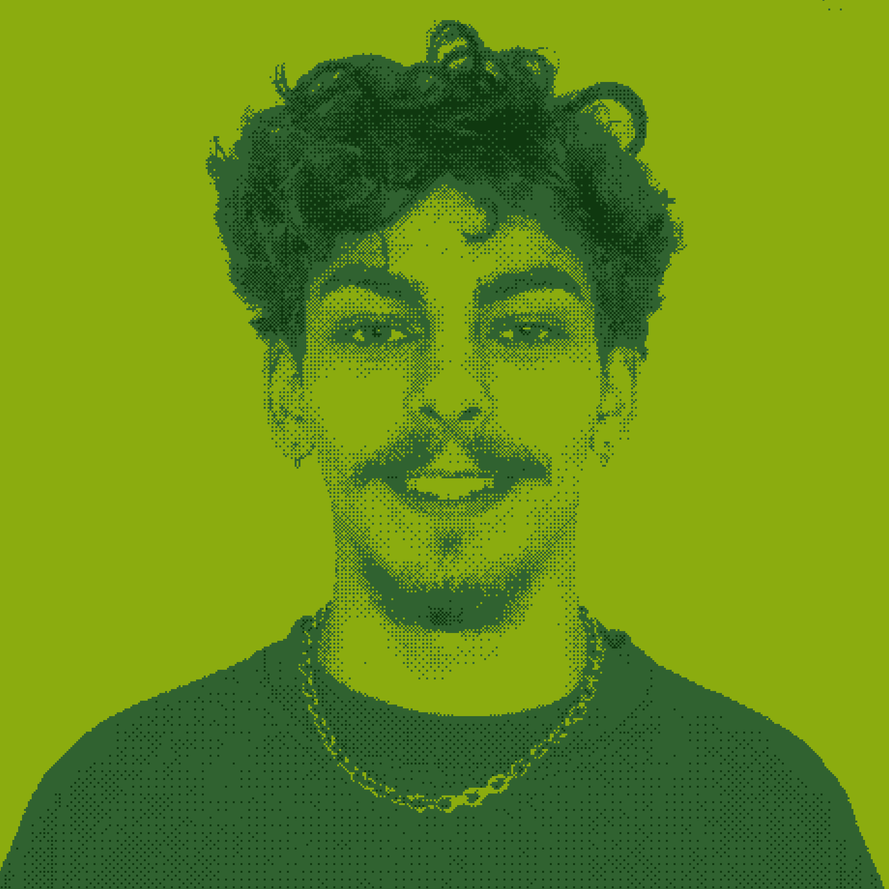

Tatu Robert-Gabriel
Tehnician Audio-Video, Sibiu
Cunoștințe generale în: Editare foto, Editare Video, Microsoft Office, Ressolume Arena
Îmi place să meșteresc și să contribui la scena culturală locală
Contact: robertgabriel.tatu@ulbsibiu.ro
 Se incarca proiectele...
Se incarca proiectele...Job
Museum of Immersive New Art - MINA
Tehnician Audio-Video
13.11.2025 – 01.02.2026
Voluntariat
Maratonul Internațional Sibiu 2026
26.05.2026 – 31.05.2026
Asistent Departament Predare Kituri
Teatrul Național Radu Stanca Sibiu (TNRS)
05.02.2026 – Prezent
Guitar Meeting Festival 2025
03.09.2025 – 09.09.2025
Coordonator Poetry Rocks Stage
Voluntariat Worldpacker – Franța
06.08.2025 – 20.08.2025
Festivalul Internațional de Teatru de la Sibiu (FITS) 2025 – Departament Video
15.11.2024 – 02.07.2025
Maratonul Internațional Sibiu 2025
21.05.2025 – 25.05.2025
Astra Film Festival 2023
16.10.2023 – 20.10.2023
Studii
Universitatea "Lucian Blaga" din Sibiu
Tehnologia Informației
2024 – prezent
Colegiul Tehnic Energetic Sibiu
Tehnician Electrotehnist
2020 – 2024
Grădinița
acum ceva timp
Certificări
Certificat de calificare profesională nivel 4
Tehnician Electrotehnist
dobândit în iunie 2024
Certificat de competențe lingvistice în limba engleză
Cambridge First Certificate in English (nivel C1)
dobândit în iunie 2023